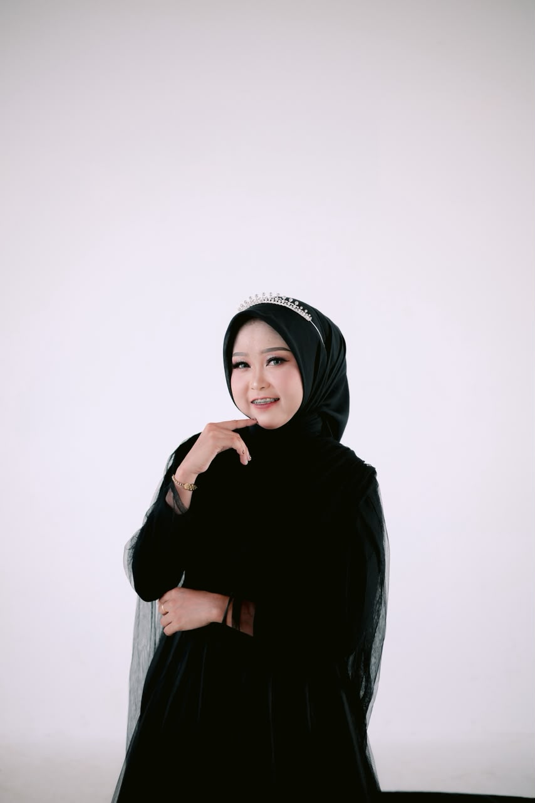

tentang-saya
Mahasiswa yang sedang mendalami dunia digital marketing, dari sisi kata-kata sampai strategi iklan.

Saya Anisa, mahasiswa Universitas Sapta Mandiri yang tertarik mendalami dunia digital marketing. Saya senang mengeksplorasi bagaimana sebuah tulisan yang tepat bisa membangun kedekatan dengan audiens, dan bagaimana strategi iklan yang terukur bisa membuat pesan itu sampai ke orang yang tepat.
Saat ini saya fokus mengasah dua hal: menulis konten yang enak dibaca dan menyusun iklan media sosial yang efektif — dua keterampilan yang saya percaya saling melengkapi dalam membangun kehadiran sebuah brand di dunia digital.